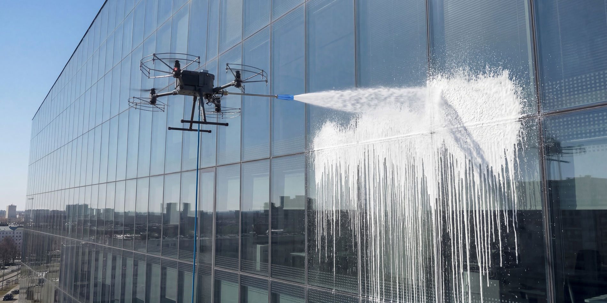

1 / 4
Ogled objekta
Pridemo na lokacijo, pregledamo objekt, izmerimo višino in določimo, kje bo stala ekipa na tleh. Na podlagi ogleda dobite ponudbo.
ARCOP čisti steklene fasade, okna na višini, sončne elektrarne in strehe z dronom. Za podjetja čistimo tudi poslovne prostore in opravljamo generalna čiščenja.

Dron je s cevjo povezan s črpalko na tleh, zato ima neomejeno vode in lahko dela, dokler objekt ni čist.
Pridemo na lokacijo, pregledamo objekt, izmerimo višino in določimo, kje bo stala ekipa na tleh. Na podlagi ogleda dobite ponudbo.
Dron po površini objekta razprši biorazgradljivo čistilo, ki zmehča prah, saje, alge in ptičje iztrebke.
Dron se dviga in spušča v navpičnih pasovih, tako da vsak del objekta dobi enako količino vode.
Zadnje spiranje opravimo z demineralizirano vodo. Na steklu se posuši brez vodnega kamna in madežev.
Objekte čistimo z dronom, notranje prostore pa naša ekipa. Za vse tri storitve pripravimo ponudbo po ogledu.
Pri klasičnem čiščenju objekta ekipa najprej postavi oder ali pripelje dvigalo in zapre del pločnika. Z dronom začnemo čistiti isti dan, ko pridemo, ljudje pa lahko ves čas normalno hodijo v stavbo.
Vse površine, do katerih bi sicer potrebovali oder, dvigalo ali plezalca na vrvi.
Za steklo uporabljamo nizek tlak in mehko čistilo. Visok tlak uporabimo samo na površinah, ki ga prenesejo, na primer na betonu ali strehi, in to vedno uskladimo z vami pred začetkom.
Dostop do priključka za vodo in elektriko ter prostor ob stavbi, kjer stoji ekipa. Vse ostalo pripeljemo s seboj.
V močnem vetru ali dežju ne letimo. Če je napoved slaba, termin prestavimo in vas o tem obvestimo dan prej.
Za let nad mestom in ob stavbah so potrebna dovoljenja. Uredimo jih mi, vi nam pri tem le potrdite termin in naslov objekta.
Napišite, kaj želite očistiti. Dogovorimo se za ogled in pripravimo ponudbo.